物語のかけら
本文より
01 / 15
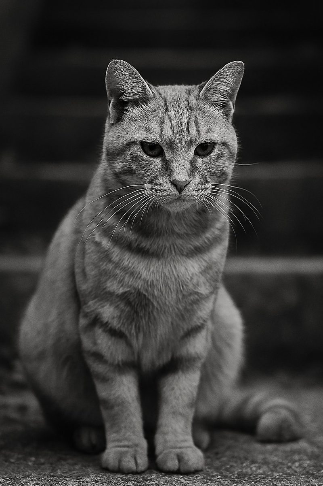
「にゃーじゃわかんないだろう、しゃべれるのか？」
「じつはしゃべれます……」
本文より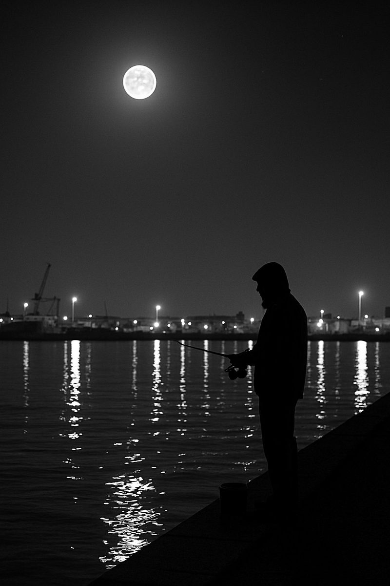
いつのまにかギターの代わりに釣竿を握っている。
本文より鯉の餌やり、沖釣り、週末の喫茶店、砂金採りにアイドルのプロデュース。
本文より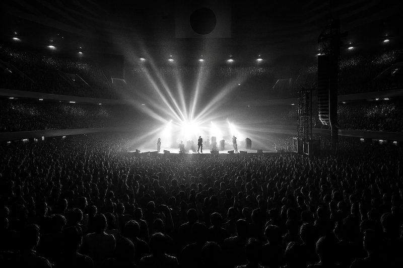
むむむ……、武道館かあ……。
めんどくさいなあ……。
着ていく服もないしなあ……。
本文より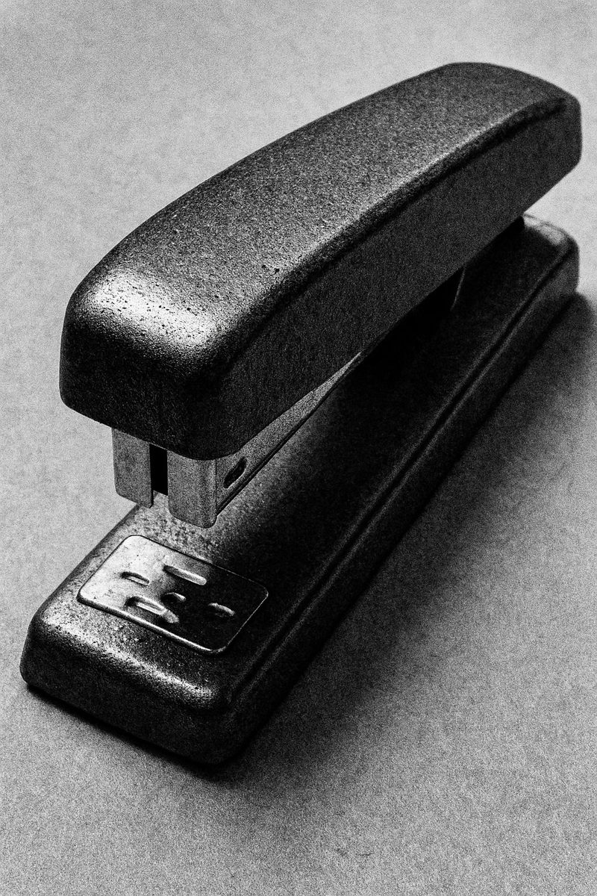
「青木さんお久しぶりです、今は何をしてますか？」
「今？ホッチキスを探してるんだけど」
本文より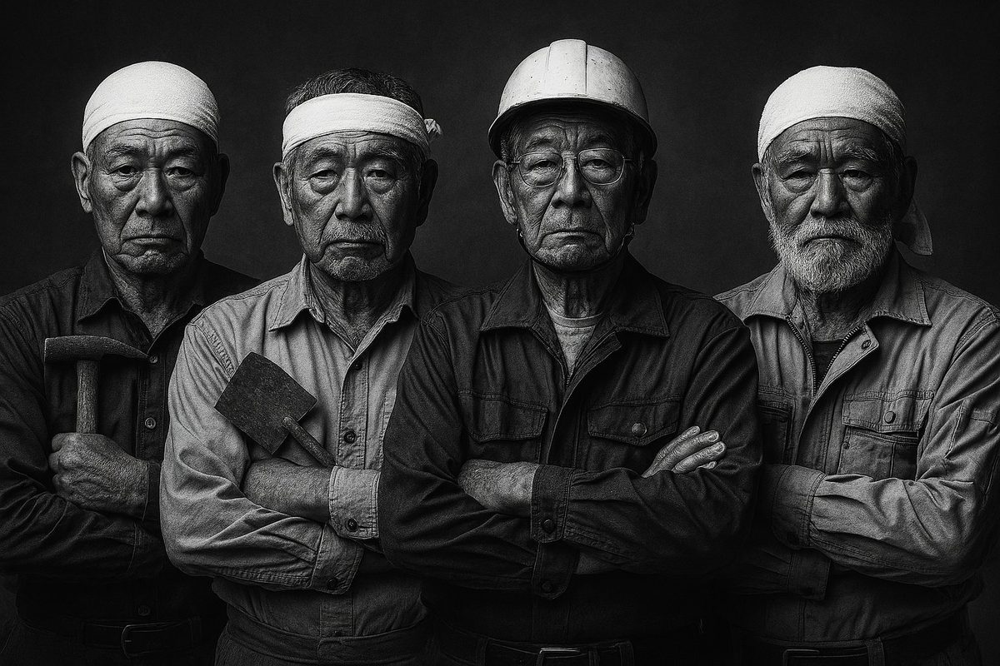
「すごいメンバーですね、でもお金がないんですよ……」
「金なんかいらねえよ、みんな年金暮らしだし暇なんだから」
本文より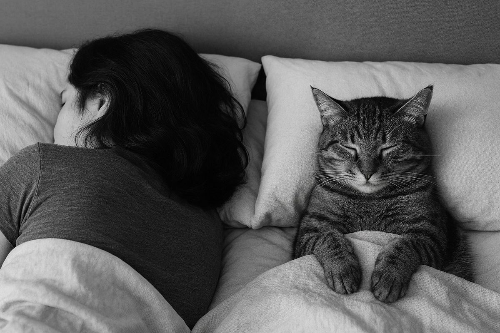
「こらっ、どけっ！」
おにゃんどんに言うとしぶしぶと布団から出ていった。
おにゃんどんの温もりが残る布団に入って眠った。
本文より「大丈夫、心配要らないよ、いいから歌え、お前、俺を誰だと思ってるんだよ？」
本文より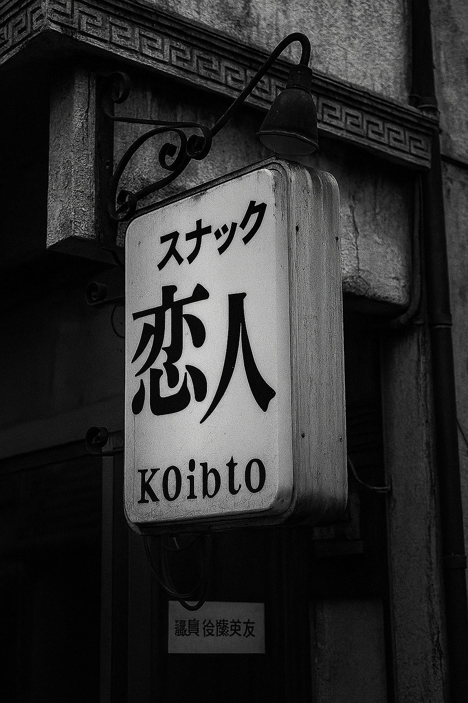
「あの日は、寒い朝でね……」
ママは二二六事件の朝のことを思い出して話し始めた。
本文より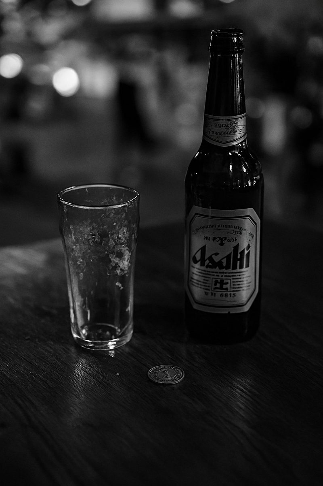
「焼酎をくれ」
「焼酎は置いてないんです」
「なんだ、ないのか、じゃあビールをくれ」
本文より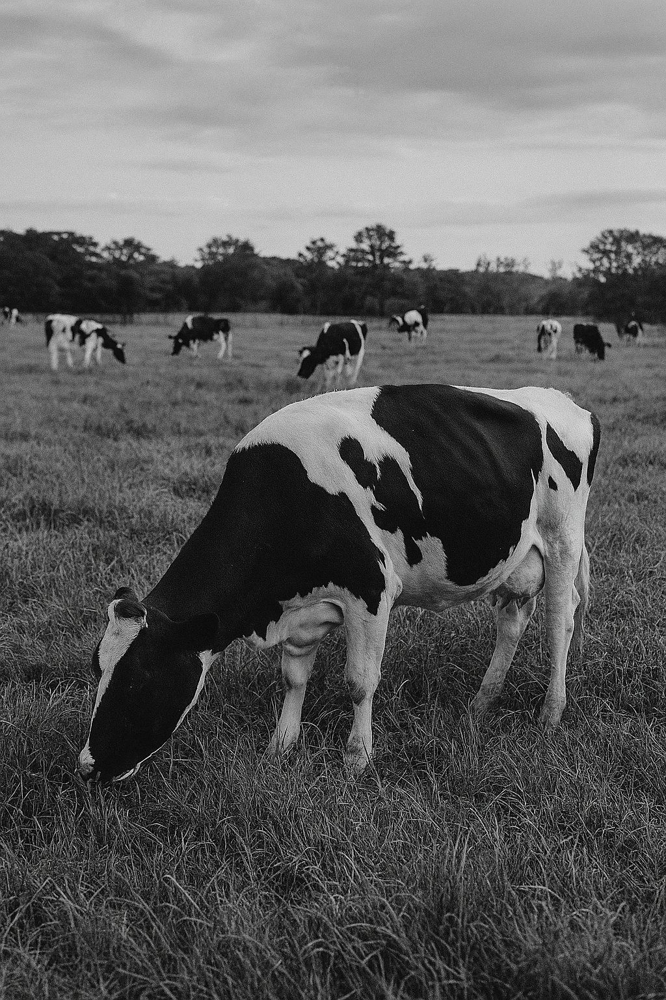
どんな時でも僕の心の柵の中には典子がいた。
牧場に牛がいるように。
本文より「大げさな夕日ね、ダイナミックすぎるのよ」
本文より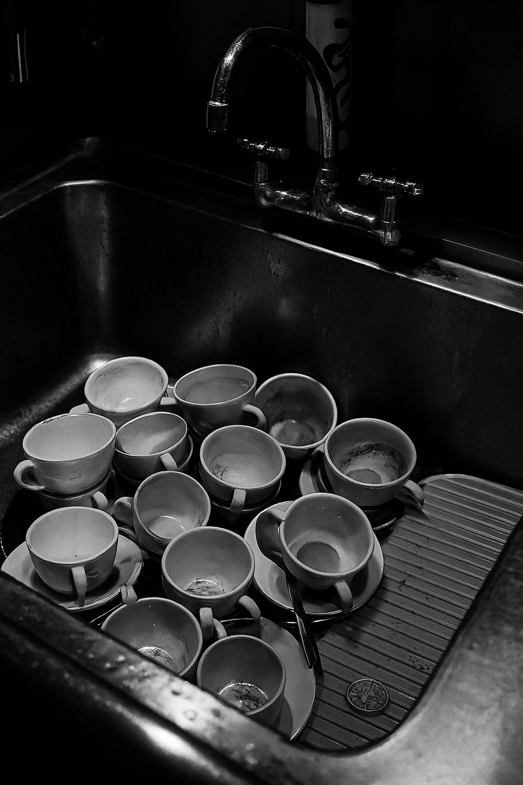
ご夫婦がカウンターの僕の方を振り向いて、笑顔で言った。
「こんなに美味しいコーヒーは初めてです」
本文より客席全体を笑顔で見渡しながら二万人に向けて彼女は大きく手を振った。
本文より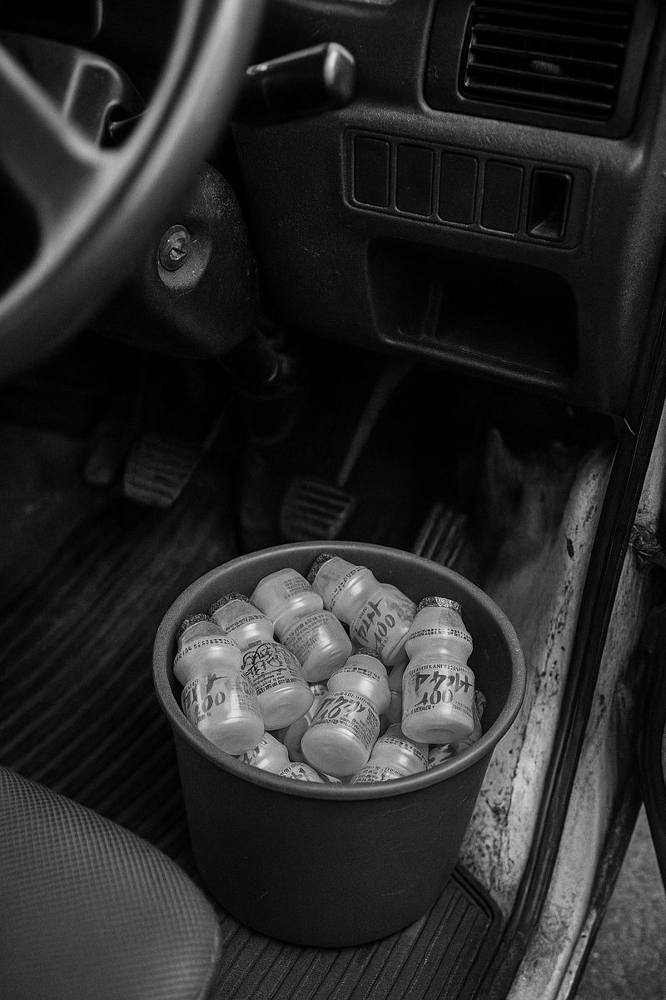
「まだ、パチンコしてるの？バカじゃないの」
「してないよ、なんでだよ」
本文より